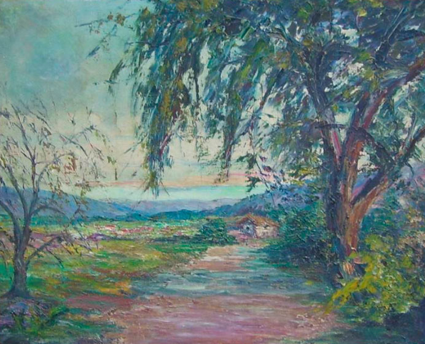

Alvarez Prado, Carolina
Artista Nacida en Tilcara, provincia de jujuy el 26 de Noviembre de 1902 y fallecida en la misma ciudad el 31 de Diciembre de 1986.Artista impresionista, en sus pinturas plasmó los paisajes y la gente del noroeste argentino, especialmente escenas costumbristas de su provincia natal.